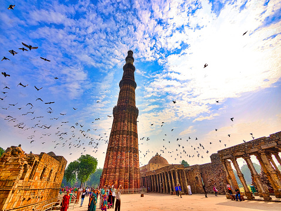

Taj Mahal

The Taj Mahal is an ivory-white marble mausoleum on the right bank of the Yamuna river in the Indian city of Agra. It was commissioned in 1632 by the Mughal emperor, Shah Jahan, to house the tomb of his favorite wife, Mumtaz Mahal.
Qutub Minar
Qutub Minar is a minaret that forms part of the Qutb complex, a UNESCO World Heritage Site in the Mehrauli area of Delhi, India. The tower is 73 metres (240 feet) tall and has a diameter of 14.3 metres (47 feet) at the base.
Red Fort

The Red Fort is a historic fort in the city of Delhi in India. It was the main residence of the emperors of the Mughal dynasty for nearly 200 years, until 1857. The fort is named for its massive red sandstone walls, which surround the palace complex.
Golden Temple

The Golden Temple, also known as Sri Harmandir Sahib, is a Gurdwara located in Amritsar, Punjab. It is one of the most revered spiritual sites of Sikhism.
Khajuraho Temples

The Khajuraho Group of Monuments is a group of Hindu and Jain temples located in Chhatarpur district, Madhya Pradesh. These temples are famous for their intricate carvings and sculptures.
Hawa Mahal

Hawa Mahal, also known as the Palace of Winds, is a palace located in Jaipur, Rajasthan. It was built in 1799 by Maharaja Sawai Pratap Singh.
Lotus Temple

The Lotus Temple is a Bahá'í House of Worship located in New Delhi. It was completed in 1986 and is known for its distinctive lotus-shaped design.
Jaisalmer Fort

The Jaisalmer Fort is a fort located in Jaisalmer, Rajasthan. It was built in 1156 AD by the Rajput ruler Rawal Jaisal.